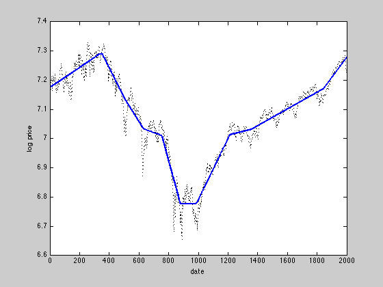

l1 trend filtering
y = csvread('snp500.txt');
n = length(y);
e = ones(n,1);
D = spdiags([e -2*e e], 0:2, n-2, n);
lambda = 50;
cvx_begin
variable x(n)
minimize( 0.5*sum_square(y-x)+lambda*norm(D*x,1) )
cvx_end
figure(1);
plot(1:n,y,'k:','LineWidth',1.0); hold on;
plot(1:n,x,'b-','LineWidth',2.0); hold off;
xlabel('date'); ylabel('log price');
Calling SDPT3: 5998 variables, 1999 equality constraints
------------------------------------------------------------
num. of constraints = 1999
dim. of socp var = 5998, num. of socp blk = 1999
*******************************************************************
SDPT3: Infeasible path-following algorithms
*******************************************************************
version predcorr gam expon scale_data
NT 1 0.000 1 0
it pstep dstep pinfeas dinfeas gap mean(obj) cputime
-------------------------------------------------------------------
0|0.000|0.000|2.0e+01|4.4e+01|6.4e+06| 7.065115e+04| 0:0:00| spchol 1 1
1|1.000|0.990|6.9e-06|4.6e-01|2.0e+05| 6.699701e+04| 0:0:00| spchol 1 1
2|1.000|0.981|3.3e-06|9.1e-03|1.4e+04| 6.945309e+03| 0:0:00| spchol 1 1
3|0.976|1.000|1.8e-06|2.1e-05|3.3e+02| 1.650434e+02| 0:0:00| spchol 1 1
4|0.791|1.000|4.7e-06|2.4e-06|7.9e+01| 3.978804e+01| 0:0:01| spchol 1 1
5|0.879|0.776|7.8e-07|1.2e-06|2.1e+01| 1.136451e+01| 0:0:01| spchol 1 1
6|0.686|0.454|3.1e-07|8.3e-07|9.6e+00| 5.770089e+00| 0:0:01| spchol 1 1
7|0.634|0.493|1.5e-07|4.8e-07|5.1e+00| 3.650125e+00| 0:0:01| spchol 1 1
8|1.000|0.467|3.6e-08|2.9e-07|1.5e+00| 1.919026e+00| 0:0:01| spchol 1 1
9|0.597|0.769|4.0e-08|7.4e-08|7.6e-01| 1.707413e+00| 0:0:01| spchol 1 1
10|0.958|0.676|1.7e-09|3.2e-08|1.9e-01| 1.473677e+00| 0:0:01| spchol 1 1
11|0.745|0.795|4.3e-10|6.9e-09|7.1e-02| 1.432599e+00| 0:0:01| spchol 1 2
12|0.645|0.713|1.5e-10|2.1e-09|3.4e-02| 1.417003e+00| 0:0:01| spchol 1 2
13|0.772|0.854|3.5e-11|3.3e-10|1.1e-02| 1.406795e+00| 0:0:02| spchol 2 1
14|0.702|0.779|1.1e-11|8.0e-11|4.7e-03| 1.403854e+00| 0:0:02| spchol 1 2
15|0.876|0.877|1.3e-12|1.2e-11|9.4e-04| 1.402070e+00| 0:0:02| spchol 2 2
16|0.559|0.946|5.7e-13|1.6e-12|5.0e-04| 1.401865e+00| 0:0:02| spchol 2 2
17|0.565|0.994|1.8e-12|1.0e-12|2.6e-04| 1.401750e+00| 0:0:02| spchol 2 2
18|0.564|1.000|9.6e-12|1.0e-12|1.4e-04| 1.401689e+00| 0:0:02| spchol 2 2
19|0.565|1.000|1.0e-12|1.5e-12|7.5e-05| 1.401656e+00| 0:0:02| spchol 2 2
20|0.558|1.000|2.1e-11|1.0e-12|4.1e-05| 1.401638e+00| 0:0:03| spchol 2 2
21|0.560|1.000|2.1e-11|1.5e-12|2.2e-05| 1.401629e+00| 0:0:03| spchol 2 2
22|0.553|1.000|3.3e-12|2.2e-12|1.2e-05| 1.401624e+00| 0:0:03| spchol 2 2
23|0.555|1.000|3.1e-11|1.0e-12|6.4e-06| 1.401621e+00| 0:0:03| spchol 2 2
24|0.557|1.000|3.1e-11|1.5e-12|3.5e-06| 1.401620e+00| 0:0:03| spchol 2 2
25|0.559|1.000|9.8e-11|2.2e-12|1.9e-06| 1.401619e+00| 0:0:03| spchol 2 2
26|0.561|1.000|5.9e-11|3.4e-12|1.0e-06| 1.401619e+00| 0:0:03| spchol 2 2
27|0.562|1.000|2.6e-11|5.1e-12|5.4e-07| 1.401618e+00| 0:0:03| spchol 2 2
28|0.564|0.999|1.5e-11|5.2e-12|2.9e-07| 1.401618e+00| 0:0:03| spchol 2 2
29|0.565|0.973|9.3e-12|3.2e-12|1.5e-07| 1.401618e+00| 0:0:04| spchol 2 2
30|0.566|0.969|5.1e-12|2.0e-12|8.2e-08| 1.401618e+00| 0:0:04| spchol 2 2
31|0.567|0.965|2.1e-12|1.1e-12|4.4e-08| 1.401618e+00| 0:0:04|
stop: max(relative gap, infeasibilities) < 1.49e-08
-------------------------------------------------------------------
number of iterations = 31
primal objective value = 1.40161820e+00
dual objective value = 1.40161815e+00
gap := trace(XZ) = 4.36e-08
relative gap = 1.15e-08
actual relative gap = 1.15e-08
rel. primal infeas = 2.12e-12
rel. dual infeas = 1.08e-12
norm(X), norm(y), norm(Z) = 2.1e+00, 1.5e+03, 2.7e+03
norm(A), norm(b), norm(C) = 1.2e+02, 2.2e+00, 2.2e+03
Total CPU time (secs) = 3.9
CPU time per iteration = 0.1
termination code = 0
DIMACS: 2.4e-12 0.0e+00 4.7e-11 0.0e+00 1.1e-08 1.1e-08
-------------------------------------------------------------------
------------------------------------------------------------
Status: Solved
Optimal value (cvx_optval): +1.40162
